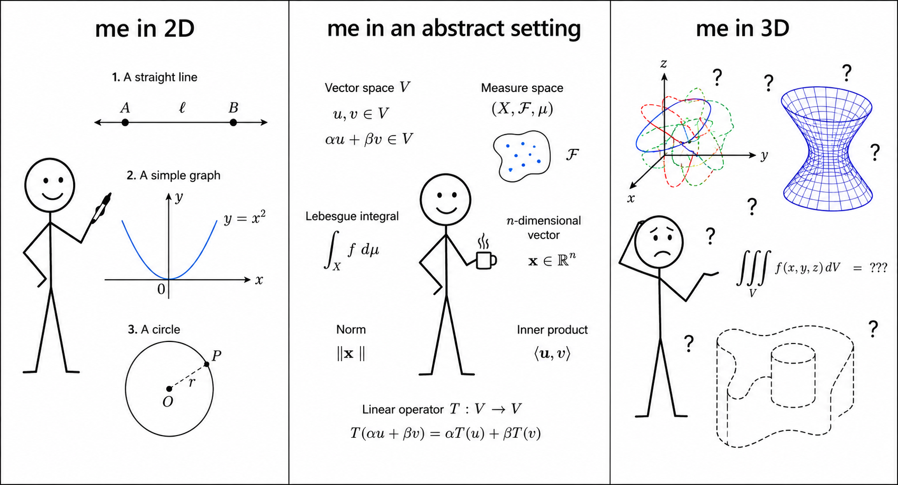
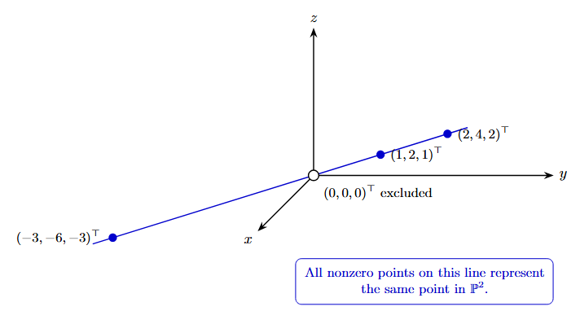
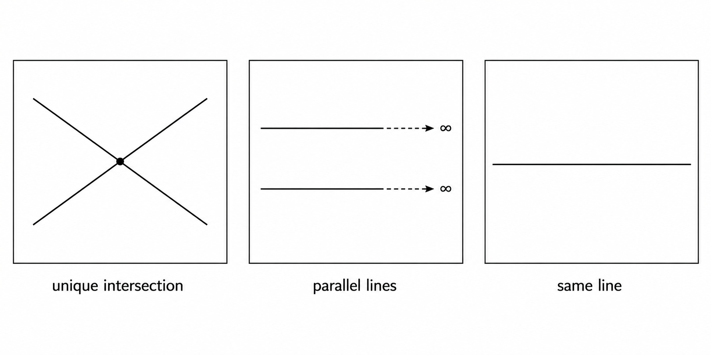
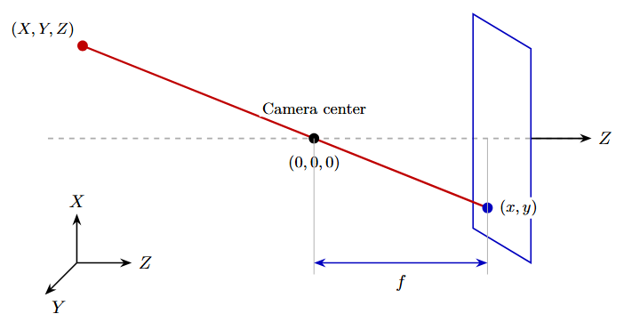
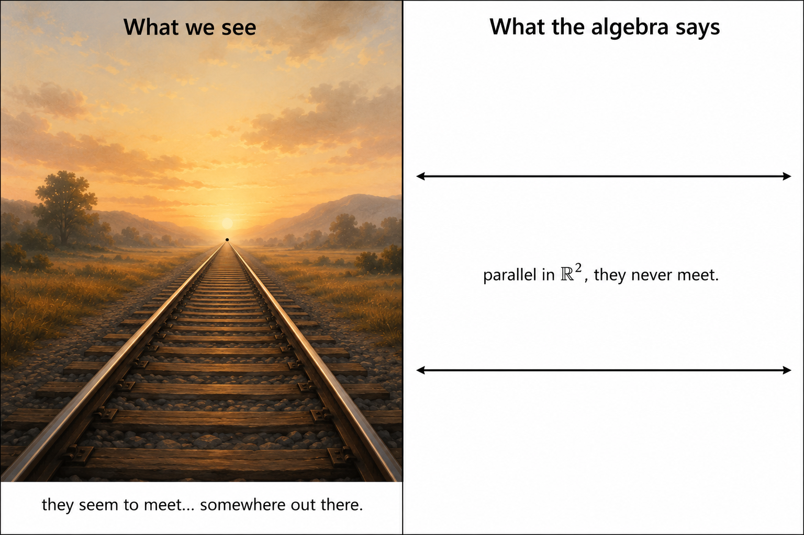

3D computer vision from first principles — Part 1
Homogeneous coordinates and the projective plane derived via Gaussian elimination
A Confession to Begin With
I have a horrible spatial intuition. I can draw pictures in the plane, but I am very poor at visualizing the three-dimensional space that we live in. I cannot tell which room is directly below mine, what is to my upper left or lower right, and my sense of direction is, to put it generously, unreliable.
When it comes to mathematics, ask me to visualize a function over a 3D region, or to picture the quadric surfaces from multivariable calculus — ellipsoids, hyperboloids, paraboloids — and I will struggle. I cannot draw in 3D. And yet I understand things better when I can draw pictures — sequences converging to a limit, linear maps that shear or rotate, singular value decomposition stretching a unit sphere into an ellipsoid. All of that I can see in 2D. The moment it becomes three-dimensional, the picture disappears and I am left with algebra alone.
That said, abstraction does not bother me. I have no problem computing or deriving things in \(\mathbb{R}^n\) for any \(n\), or working in a finite-dimensional vector space \(V\). I do not mind writing the Lebesgue integral \(\int_X f \, d\mu\) over an abstract measure space \((X, \mathcal{F}, \mu)\). If anything, the higher the dimension, the more I have to rely on algebra — and algebra, I can do.

And yet — I love vision, perception, and geometry. I have spent over eight years working in 2D computer vision and image processing, and somewhere along the way I fell in love with the mathematics of how machines see the world. Now it is time to move to the next dimension. Not because I suddenly acquired spatial intuition — I have not (I still struggle with 3D visualization) — but because the mathematics goes there, and I intend to follow it.
So here is my attempt at understanding and explaining 3-dimensional computer vision from first principles, with as much algebra/geometry and as few spatial leaps as possible. Let’s see where this takes us. I have planned a series of posts, and this is the first.
This post is math-heavy. I will not shy away from the algebra, because here the algebra is the geometry.
This post is not a rigorous introduction to projective geometry. It is my attempt to build up the terminology — homogeneous coordinates, equivalence classes, \(\mathbb{P}^2\) — purely from linear algebra, specifically from Gaussian elimination. No prior projective geometry is assumed. The terminology will be introduced only when the algebra makes it useful.
The Setup
I am working through 3D computer vision from first principles — specifically, building up to the camera matrix, epipolar geometry, and eventually neural geometric models. Before any of that, one needs projective geometry. And before projective geometry, one needs homogeneous coordinates.
Many introductions begin by declaring that a point \(\mathbf{x} = (x, y)^\top\) is represented homogeneously by \(\tilde{\mathbf{x}} = (x, y, 1)^\top\), and here is \(\mathbb{P}^2\). The motivation is usually given after the fact, if at all.
I wanted to go the other way. Start with a concrete algebraic problem. Do the obvious thing. And see if homogeneous coordinates and \(\mathbb{P}^2\) fall out on their own. They do.
Prerequisites
This series assumes some familiarity with basic geometry and linear algebra — vectors, matrices, row reduction, determinants, eigenvalues, singular values, and related ideas. The more linear algebra you know, the better. We will also need two things from set theory: equivalence relations and equivalence classes. If you know what these are, great. If not, here are two short Wikipedia primers — equivalence relations and equivalence classes — the definitions fit in a few lines and we will need them.
A Familiar Problem
Let me revisit something from grade school. Take two lines in the plane:
\[a_1 x + b_1 y + c_1 = 0\]
\[a_2 x + b_2 y + c_2 = 0\]
Where do they meet?
Everyone has solved this. You set the two equations equal, eliminate a variable, and find the intersection point \((x, y)^\top\). It is a standard linear system:
\[\underbrace{\begin{bmatrix} a_1 & b_1 \\ a_2 & b_2 \end{bmatrix}}_{A} \begin{pmatrix} x \\ y \end{pmatrix} = \begin{pmatrix} -c_1 \\ -c_2 \end{pmatrix}\]
Row reduce the augmented matrix \([A \mid \mathbf{b}]\). Assuming \(\det A \neq 0\), the solution is:
\[x = \frac{b_1 c_2 - b_2 c_1}{\det A}, \qquad y = \frac{a_2 c_1 - a_1 c_2}{\det A}\]
where \(\det A = a_1 b_2 - a_2 b_1\).
Simple enough. But look closely at what the algebra actually handed us.
The Answer is a Ratio
The intersection point is not just two numbers \(x\) and \(y\). It is two ratios — both sharing the same denominator \(\det A\). Define:
\[p := b_1 c_2 - b_2 c_1, \qquad q := a_2 c_1 - a_1 c_2, \qquad w := \det A\]
Then the intersection is \((p/w,\ q/w)^\top\). The algebra naturally produces a triple \((p, q, w)^\top\), not a pair.
This is not a coincidence. The triple itself is not unique — what matters is the pair of ratios obtained from it. To see why, suppose we scale the triple by a nonzero scalar \(k\): replace \((p, q, w)^\top\) by \((kp, kq, kw)^\top\). The recovered point in \(\mathbb{R}^2\) is:
\[\frac{kp}{kw} = \frac{p}{w}, \qquad \frac{kq}{kw} = \frac{q}{w}\]
The \(k\) cancels. The point is unchanged. So \((p, q, w)^\top\) and \((kp, kq, kw)^\top\) represent the same point in \(\mathbb{R}^2\) for any \(k \neq 0\).
Rescaling either line merely rescales the entire triple, leaving those ratios unchanged. We will verify this shortly.
So the intersection point depends only on the ratios \(p : q : w\), not on the individual values. The algebra is already hinting at something.
A Different Viewpoint
We have the triple \((p, q, w)^\top\) from row reduction. But let me reframe the same problem differently — and this reframing will be useful for everything that follows.
Represent each line as a vector of its coefficients:
\[\boldsymbol{\ell}_1 = \begin{pmatrix} a_1 \\ b_1 \\ c_1 \end{pmatrix}, \qquad \boldsymbol{\ell}_2 = \begin{pmatrix} a_2 \\ b_2 \\ c_2 \end{pmatrix}\]
We use \(\boldsymbol{\ell}\) — the standard mathematical symbol for a line — rather than plain \(\mathbf{l}\), which is common in computer vision literature (Hartley and Zisserman use \(\mathbf{l}\) throughout). The mathematics is identical either way.
Now suppose \(w \neq 0\) and let the triple \((p, q, w)^\top\) encode the ordinary point \(x = p/w\), \(y = q/w\). Substitute into the line equation \(ax + by + c = 0\):
\[a\frac{p}{w} + b\frac{q}{w} + c = 0\]
Multiply through by \(w\):
\[ap + bq + cw = 0\]
With \(\boldsymbol{\ell} = (a, b, c)^\top\) and \(\mathbf{u} = (p, q, w)^\top\), this is just:
\[\boldsymbol{\ell}^\top \mathbf{u} = 0\]
This is the incidence condition — a point \(\mathbf{u}\) lies on a line \(\boldsymbol{\ell}\) if and only if \(\boldsymbol{\ell}^\top \mathbf{u} = 0\). Two things are worth noting. First, this emerged directly from the ratio representation — we did not assume it. Second, it remains meaningful even when \(w = 0\), where division by \(w\) is impossible. We will return to this.
The condition that \(\mathbf{u}\) lies on both lines is then:
\[\boldsymbol{\ell}_1^\top \mathbf{u} = 0 \qquad \text{and} \qquad \boldsymbol{\ell}_2^\top \mathbf{u} = 0\]
Stack these into a single homogeneous system \(A\mathbf{u} = \mathbf{0}\), where \(A\) is the \(2 \times 3\) matrix whose rows are \(\boldsymbol{\ell}_1^\top\) and \(\boldsymbol{\ell}_2^\top\):
\[A = \begin{bmatrix} a_1 & b_1 & c_1 \\ a_2 & b_2 & c_2 \end{bmatrix}\]
We want a nonzero \(\mathbf{u} \in \mathbb{R}^3\) in the null space of \(A\). But \(A\mathbf{u} = \mathbf{0}\) means \(\mathbf{u}\) is orthogonal to every row of \(A\) — orthogonal to both \(\boldsymbol{\ell}_1\) and \(\boldsymbol{\ell}_2\) simultaneously.
In \(\mathbb{R}^3\), there is a standard operation that takes two vectors and returns a vector orthogonal to both — the cross product. So:
\[\mathbf{u} = \boldsymbol{\ell}_1 \times \boldsymbol{\ell}_2\]
The cross product did not come from a formula to memorize. When the two line vectors \(\boldsymbol{\ell}_1\) and \(\boldsymbol{\ell}_2\) are linearly independent, the matrix \(A\) has rank \(2\), so its null space is one-dimensional. The cross product gives a nonzero vector spanning that null space — the unique direction, up to scale, orthogonal to both rows.
So, in the non-degenerate case,
\[\boldsymbol{\ell}_1 \times \boldsymbol{\ell}_2 = \begin{pmatrix} b_1 c_2 - b_2 c_1 \\ a_2 c_1 - a_1 c_2 \\ a_1 b_2 - a_2 b_1 \end{pmatrix} = \begin{pmatrix} p \\ q \\ w \end{pmatrix}\]
This is exactly the triple row reduction handed us earlier. Now suppose we rescale both lines — replace \(\boldsymbol{\ell}_1\) with \(\lambda_1 \boldsymbol{\ell}_1\) and \(\boldsymbol{\ell}_2\) with \(\lambda_2 \boldsymbol{\ell}_2\). The cross product becomes:
\[(\lambda_1 \boldsymbol{\ell}_1) \times (\lambda_2 \boldsymbol{\ell}_2) = \lambda_1 \lambda_2 \begin{pmatrix} p \\ q \\ w \end{pmatrix}\]
The recovered point in \(\mathbb{R}^2\):
\[\frac{\lambda_1 \lambda_2\, p}{\lambda_1 \lambda_2\, w} = \frac{p}{w}, \qquad \frac{\lambda_1 \lambda_2\, q}{\lambda_1 \lambda_2\, w} = \frac{q}{w}\]
The \(\lambda_1 \lambda_2\) cancels. The intersection point is unchanged. So the triple \((p, q, w)^\top\) and the triple \((\lambda_1 \lambda_2\, p,\ \lambda_1 \lambda_2\, q,\ \lambda_1 \lambda_2\, w)^\top\) represent the same point in \(\mathbb{R}^2\) — what matters is not the triple itself, but the ratios it encodes.
When Are Two Triples the Same Point?
This is the natural next question. I have this linear system and cross product machinery that tells me how to find intersection points as triples. But suppose I had two different triples \(\mathbf{u} = (p_1, q_1, w_1)^\top\) and \(\mathbf{v} = (p_2, q_2, w_2)^\top\). When do they represent the same point in \(\mathbb{R}^2\)?
Let’s start with the happy case — assume \(w_1 \neq 0\) and \(w_2 \neq 0\). Then both triples recover points in \(\mathbb{R}^2\) via division by the third coordinate. They represent the same point when:
\[\frac{p_1}{w_1} = \frac{p_2}{w_2} \qquad \text{and} \qquad \frac{q_1}{w_1} = \frac{q_2}{w_2}\]
Set \(\lambda := w_2 / w_1\). The first equation gives \(p_2 = \lambda p_1\), the second gives \(q_2 = \lambda q_1\), and by definition \(w_2 = \lambda w_1\). That is, \(\mathbf{v} = \lambda \mathbf{u}\).
So if two triples represent the same point in \(\mathbb{R}^2\), one must be a nonzero scalar multiple of the other. And \(\lambda \neq 0\) is automatic — if \(\lambda = 0\) then \(\mathbf{v} = \mathbf{0}\), which recovers no point anywhere.
Is the converse true? Suppose \(\mathbf{v} = \lambda \mathbf{u}\) for some \(\lambda \neq 0\). Do they represent the same point in \(\mathbb{R}^2\)? Yes:
\[\frac{p_2}{w_2} = \frac{\lambda p_1}{\lambda w_1} = \frac{p_1}{w_1}, \qquad \frac{q_2}{w_2} = \frac{\lambda q_1}{\lambda w_1} = \frac{q_1}{w_1}\]
The \(\lambda\) cancels. So the converse holds too.
Theorem. Two triples \(\mathbf{u} = (p_1, q_1, w_1)^\top\) and \(\mathbf{v} = (p_2, q_2, w_2)^\top\) in \(\mathbb{R}^3\) with \(w_1, w_2 \neq 0\) represent the same point in \(\mathbb{R}^2\) if and only if \(\mathbf{v} = \lambda \mathbf{u}\) for some \(\lambda \neq 0\).
An Equivalence Relation on \(\mathbb{R}^3\)
So it looks like I can form a relation on \(\mathbb{R}^3\) by collecting triples that map to the same point in \(\mathbb{R}^2\). Two triples are related if one is a nonzero scalar multiple of the other. Let me write this down precisely.
But first — the zero vector \(\mathbf{0}\) has to go. The zero vector carries no ratios — \(0/0\) is undefined, it encodes no direction, and it corresponds to no point in \(\mathbb{R}^2\). So we work on \(\mathbb{R}^3 \setminus \{\mathbf{0}\}\) from the outset.
Define the relation \(\sim\) on \(\mathbb{R}^3 \setminus \{\mathbf{0}\}\) by:
\[\mathbf{u} \sim \mathbf{v} \qquad \Longleftrightarrow \qquad \mathbf{v} = \lambda\mathbf{u} \text{ for some } \lambda \neq 0\]
Note that \(\lambda \neq 0\) is automatic on \(\mathbb{R}^3 \setminus \{\mathbf{0}\}\) — if \(\lambda = 0\) then \(\mathbf{v} = \mathbf{0}\), which is not in our set. We state it explicitly to be clear.
This is an equivalence relation. The three properties follow directly:
- Reflexivity. \(\mathbf{u} = 1 \cdot \mathbf{u}\), so \(\mathbf{u} \sim \mathbf{u}\).
- Symmetry. If \(\mathbf{v} = \lambda\mathbf{u}\), then \(\mathbf{u} = (1/\lambda)\mathbf{v}\), so \(\mathbf{v} \sim \mathbf{u}\).
- Transitivity. If \(\mathbf{v} = \lambda\mathbf{u}\) and \(\mathbf{w} = \mu\mathbf{v}\), then \(\mathbf{w} = \mu\lambda\mathbf{u}\), so \(\mathbf{u} \sim \mathbf{w}\).
Since \(\sim\) is an equivalence relation, it partitions \(\mathbb{R}^3 \setminus \{\mathbf{0}\}\) into disjoint equivalence classes — every nonzero vector belongs to exactly one class, and no two classes overlap. The set of all these classes is called the quotient set (don’t worry, it sounds scarier than it is).
Each equivalence class is:
\[[\mathbf{u}] := \{\lambda\mathbf{u} : \lambda \neq 0\}\]
Geometrically, this is the line through the origin in \(\mathbb{R}^3\) in the direction of \(\mathbf{u}\), with the origin removed. Every nonzero vector on that line is in the same class — they all encode the same point in \(\mathbb{R}^2\).
For example, the vectors \((1, 2, 1)^\top\), \((2, 4, 2)^\top\), and \((-3, -6, -3)^\top\) all belong to the same equivalence class — they are all scalar multiples of each other, and they all recover the same point in \(\mathbb{R}^2\):
\[\frac{1}{1} = \frac{2}{2} = \frac{-3}{-3} = 1, \qquad \frac{2}{1} = \frac{4}{2} = \frac{-6}{-3} = 2\]
So \((1, 2, 1)^\top\), \((2, 4, 2)^\top\), and \((-3, -6, -3)^\top\) are three different representatives of the same class \([1 : 2 : 1]\) — the point \((1, 2)^\top\).

What About Parallel Lines?
The happy case is when two lines intersect at a unique point — \(\det A \neq 0\), the cross product gives a triple \((p, q, w)^\top\) with \(w \neq 0\), and we recover a perfectly ordinary point in \(\mathbb{R}^2\). But we learned in high school that two lines do not always intersect. Parallel lines never meet — or so we were told.
Let us see what the algebra actually says. Take two parallel lines:
\[x + 2y - 3 = 0 \qquad \text{and} \qquad x + 2y - 5 = 0\]
Same coefficients \(a\) and \(b\), different constants. Represent them as:
\[\boldsymbol{\ell}_1 = \begin{pmatrix} 1 \\ 2 \\ -3 \end{pmatrix}, \qquad \boldsymbol{\ell}_2 = \begin{pmatrix} 1 \\ 2 \\ -5 \end{pmatrix}\]
and compute the cross product:
\[\boldsymbol{\ell}_1 \times \boldsymbol{\ell}_2 = \begin{pmatrix} (2)(-5) - (-3)(2) \\ (-3)(1) - (1)(-5) \\ (1)(2) - (2)(1) \end{pmatrix} = \begin{pmatrix} -4 \\ 2 \\ 0 \end{pmatrix}\]
A line \(ax + by + c = 0\) in \(\mathbb{R}^2\) has normal vector \((a, b)^\top\) — the vector perpendicular to the line. The direction vector, the vector that runs along the line, is perpendicular to the normal: \((-b, a)^\top\).
Parallel lines share the same normal \((a, b)^\top\) and hence the same direction vector \((-b, a)^\top\) — they are parallel translates of the same one-dimensional subspace of \(\mathbb{R}^2\). Change the constant \(c\) and you slide the line along the normal direction, but the direction vector does not change.
For our example, \(a = 1\), \(b = 2\), so the direction vector is \((-2, 1)^\top\) — exactly what the cross product encoded in the first two coordinates of \((-4, 2, 0)^\top\).
If any of this feels unfamiliar, it is worth reviewing the basics of linear algebra or 2D geometry — normal vectors, direction vectors, and subspaces are concepts we will use repeatedly throughout this series.
The third coordinate is zero. The cross product gave a perfectly well-defined nonzero vector — the algebra did not complain, did not divide by zero, did not fail. But to recover a point in \(\mathbb{R}^2\) we need to divide by the third coordinate, and division by zero is undefined. \(\mathbb{R}^2\) has no room for this answer.
But notice — the equivalence class \([-4 : 2 : 0] = [-2 : 1 : 0]\) is perfectly well defined, and our equivalence relation \(\sim\) applies to it just fine. It simply does not correspond to any point in \(\mathbb{R}^2\).
What does it encode? The direction vector of both lines is \((-2, 1)^\top\) — the direction in which they run. The cross product packaged exactly this shared direction as a triple with \(w = 0\). And this is not a coincidence specific to this example — take any two lines parallel to \(x + 2y = c\) for any constant \(c\), and the cross product always lands in the same class \([-2 : 1 : 0]\).
So all parallel lines running in the same direction share the same equivalence class as their “intersection”. Different directions give different classes. And none of these classes have a home in \(\mathbb{R}^2\).
One small but important observation: since equivalence classes are defined only up to nonzero scale, \([-2 : 1 : 0] = [2 : -1 : 0]\). The class represents an unoriented direction — opposite direction vectors belong to the same class.
The Other Degenerate Case
What if \(\det A = 0\) but the two lines are identical — not parallel, but the same line? For example:
\[x + 2y - 3 = 0 \qquad \text{and} \qquad 2x + 4y - 6 = 0\]
The second line is just twice the first. Computing the cross product:
\[\boldsymbol{\ell}_1 \times \boldsymbol{\ell}_2 = \begin{pmatrix} 1 \\ 2 \\ -3 \end{pmatrix} \times \begin{pmatrix} 2 \\ 4 \\ -6 \end{pmatrix} = \mathbf{0}\]
The cross product is the zero vector. And \(\mathbf{0}\) is excluded from \(\mathbb{R}^3 \setminus \{\mathbf{0}\}\) by construction — it belongs to no equivalence class. There is no intersection point, and rightly so: every point on the line satisfies both equations simultaneously. There is no unique answer.
The Projective Plane \(\mathbb{P}^2\)
So let us take stock. We started with a grade school problem — intersecting two lines — and the algebra gave us three cases:
- \(\det A \neq 0\): unique intersection, cross product gives \((p, q, w)^\top\) with \(w \neq 0\), recovers an ordinary point in \(\mathbb{R}^2\).
- \(\det A = 0\), lines parallel: cross product gives \((p, q, 0)^\top \neq \mathbf{0}\), a valid equivalence class but no point in \(\mathbb{R}^2\).
- \(\det A = 0\), lines identical: cross product gives \(\mathbf{0}\), excluded entirely — no unique intersection exists.

In all three cases the formula is the same: \(\boldsymbol{\ell}_1 \times \boldsymbol{\ell}_2\). The algebra does not change. Only the output differs.
The moral is this: \(\mathbb{R}^2\) is too small. It has room for the first case but not the second. What we need is a space that holds all equivalence classes of \(\mathbb{R}^3 \setminus \{\mathbf{0}\}\) under \(\sim\) — both the ones with \(u_3 \neq 0\) and the ones with \(u_3 = 0\).
That space has a name. It is called the projective plane:
\[\mathbb{P}^2 := \left(\mathbb{R}^3 \setminus \{\mathbf{0}\}\right) / \sim\]
It splits naturally into two disjoint pieces:
\[\mathbb{P}^2 = \underbrace{\{[\mathbf{u}] : u_3 \neq 0\}}_{\cong\ \mathbb{R}^2} \sqcup \underbrace{\{[\mathbf{u}] : u_3 = 0\}}_{\text{new classes}}\]
The first piece is in bijection with \(\mathbb{R}^2\) — every ordinary point has a home here, recovered by dividing by \(u_3\). The second piece consists of the equivalence classes with \(u_3 = 0\) — one class for each direction in \(\mathbb{R}^2\), none of them representable in \(\mathbb{R}^2\) itself.
\(\mathbb{P}^2\) is the space where the single formula \(\boldsymbol{\ell}_1 \times \boldsymbol{\ell}_2\) always works — in every case except the degenerate one where the lines are identical.
The Bijection with \(\mathbb{R}^2\)
The first piece \(\{[\mathbf{u}] : u_3 \neq 0\}\) is in bijection with \(\mathbb{R}^2\). Define the map:
\[\phi : \{[\mathbf{u}] \in \mathbb{P}^2 : u_3 \neq 0\} \to \mathbb{R}^2, \qquad \phi([\mathbf{u}]) = \begin{pmatrix} u_1/u_3 \\ u_2/u_3 \end{pmatrix}\]
1. Well-defined. The map takes an equivalence class as input, so we need to check that the output does not depend on the choice of representative. Suppose \(\mathbf{v} = \lambda \mathbf{u}\) for some \(\lambda \neq 0\). Then:
\[\phi([\mathbf{v}]) = \begin{pmatrix} v_1/v_3 \\ v_2/v_3 \end{pmatrix} = \begin{pmatrix} \lambda u_1 / \lambda u_3 \\ \lambda u_2 / \lambda u_3 \end{pmatrix} = \begin{pmatrix} u_1/u_3 \\ u_2/u_3 \end{pmatrix} = \phi([\mathbf{u}])\]
The \(\lambda\) cancels. The output is the same regardless of which representative we pick.
2. Injection. Suppose \(\phi([\mathbf{u}]) = \phi([\mathbf{v}])\). Then:
\[\frac{u_1}{u_3} = \frac{v_1}{v_3} \qquad \text{and} \qquad \frac{u_2}{u_3} = \frac{v_2}{v_3}\]
Set \(\lambda := v_3/u_3\). Then \(\mathbf{v} = \lambda \mathbf{u}\). We want to show \([\mathbf{u}] = [\mathbf{v}]\).
Let \(\mathbf{x} \in [\mathbf{u}]\). Then \(\mathbf{x} = \mu \mathbf{u}\) for some \(\mu \neq 0\). But \(\mathbf{u} = (1/\lambda)\mathbf{v}\), so:
\[\mathbf{x} = \mu \cdot \frac{1}{\lambda} \mathbf{v} = \frac{\mu}{\lambda} \mathbf{v}\]
Since \(\mu/\lambda \neq 0\), we have \(\mathbf{x} \in [\mathbf{v}]\). So \([\mathbf{u}] \subseteq [\mathbf{v}]\). The reverse inclusion \([\mathbf{v}] \subseteq [\mathbf{u}]\) follows by symmetry — swap \(\mathbf{u}\) and \(\mathbf{v}\) throughout. Therefore \([\mathbf{u}] = [\mathbf{v}]\). \(\blacksquare\)
3. Surjection. Let \((x, y)^\top \in \mathbb{R}^2\) be any point. Then \((x, y, 1)^\top \in \mathbb{R}^3 \setminus \{\mathbf{0}\}\) and:
\[\phi([(x, y, 1)^\top]) = \begin{pmatrix} x/1 \\ y/1 \end{pmatrix} = \begin{pmatrix} x \\ y \end{pmatrix}\]
Every point in \(\mathbb{R}^2\) is the image of something. \(\phi\) is surjective.
Since \(\phi\) is well-defined, injective, and surjective, it is a bijection. \(\blacksquare\)
Homogeneous Coordinates
We now have everything we need to name things properly.
A representative vector \(\mathbf{u} = (u_1, u_2, u_3)^\top\) of an equivalence class \([\mathbf{u}] \in \mathbb{P}^2\) is called a set of homogeneous coordinates of the corresponding point. We write the equivalence class using colon notation:
\[[u_1 : u_2 : u_3]\]
The colons are deliberate — they emphasize that only the ratios matter, not the individual values. So \([3 : 5 : 1]\) and \([6 : 10 : 2]\) are the same element of \(\mathbb{P}^2\), both representing the point \((3, 5)^\top \in \mathbb{R}^2\). And \([-2 : 1 : 0]\) is a perfectly valid element of \(\mathbb{P}^2\) — it just does not correspond to any point in \(\mathbb{R}^2\).
A few things worth noting. First, homogeneous coordinates are not unique — any nonzero scalar multiple of \(\mathbf{u}\) is an equally valid representative of the same class. Second, the notation \([u_1 : u_2 : u_3]\) is for the class, not for any particular representative. Third, the ordinary point \((x, y)^\top \in \mathbb{R}^2\) has the canonical homogeneous representative \((x, y, 1)^\top\) — but \((2x, 2y, 2)^\top\) or \((-x, -y, -1)^\top\) work just as well.
Why Does Any of This Matter for Computer Vision?
A camera takes a 3D point \((X, Y, Z)^\top\) in the world and maps it to a 2D point \((x, y)^\top\) on a sensor. The mapping is:
\[x = \frac{fX}{Z}, \qquad y = \frac{fY}{Z}\]
where \(f\) is the focal length. Look familiar? This is the same ratio structure we spent this entire post analysing. And it has the same problem: no matrix can represent division by a coordinate directly.

But why represent a 3D point as a vector in \(\mathbb{R}^4\)? For exactly the same reason we lifted 2D points from \(\mathbb{R}^2\) to \(\mathbb{R}^3\). The camera mapping divides by \(Z\) — a nonlinear operation that no matrix can represent directly.
Why can no matrix represent this directly? If the camera mapping were linear, there would be a \(2 \times 3\) matrix \(M\) mapping \((X, Y, Z)^\top \in \mathbb{R}^3\) to \((x, y)^\top \in \mathbb{R}^2\). Any linear map must satisfy two conditions:
\[M(\mathbf{u} + \mathbf{v}) = M(\mathbf{u}) + M(\mathbf{v}) \qquad \text{(additivity)}\]
\[M(c\mathbf{u}) = cM(\mathbf{u}) \qquad \text{(scalar multiplication)}\]
The second condition alone is enough to rule out the camera mapping. It implies \(M(2\mathbf{X}) = 2M(\mathbf{X})\). But the camera mapping gives:
\[M(2\mathbf{X}) = \begin{pmatrix} f \cdot 2X / 2Z \\ f \cdot 2Y / 2Z \end{pmatrix} = \begin{pmatrix} fX/Z \\ fY/Z \end{pmatrix}\]
\[2M(\mathbf{X}) = 2\begin{pmatrix} fX/Z \\ fY/Z \end{pmatrix} = \begin{pmatrix} 2fX/Z \\ 2fY/Z \end{pmatrix}\]
These are not equal. The camera mapping is not linear, and no matrix can represent it directly.
The fix is the same: represent \((X, Y, Z)^\top\) as the equivalence class \([X : Y : Z : 1]\) in \(\mathbb{P}^3\) — the projective space of lines through the origin in \(\mathbb{R}^4\). Now the division by \(Z\) is deferred to the very last step, and everything in between stays linear.
We are doing in \(\mathbb{R}^4\) exactly what we did in \(\mathbb{R}^3\) — lifting points into a higher-dimensional space so that ratios become coordinates and linear algebra can take over.
Represent the 3D point as a vector in \(\mathbb{R}^4\):
\[\tilde{\mathbf{X}} = \begin{pmatrix} X \\ Y \\ Z \\ 1 \end{pmatrix}\]
and the image point as a vector in \(\mathbb{R}^3\):
\[\tilde{\mathbf{x}} = \begin{pmatrix} x_1 \\ x_2 \\ x_3 \end{pmatrix}\]
Then the entire camera — its position, orientation, and focal length — is encoded in a single \(3 \times 4\) matrix \(P\):
\[\tilde{\mathbf{x}} = P\tilde{\mathbf{X}}\]
The actual image point is recovered by dividing by the third coordinate — the same \(\phi\) map we defined earlier. The nonlinearity of division by \(Z\) is deferred to the very last step, while all the geometry stays linear.
This matrix \(P\) is called the camera matrix. Everything about it — how to estimate it from data, how two cameras constrain each other, how to recover 3D structure from multiple images — is linear algebra on homogeneous coordinates. That is why we started here.
Postscript: Parallel Lines Meet at Infinity
There is an old, poetic statement in geometry: parallel lines meet at infinity.
It sounds mystical. It is not. We actually derived this. Let me show you what it really means.
Take two railroad tracks represented by the two parallel lines from earlier:
\[x + 2y - 3 = 0 \qquad \text{and} \qquad x + 2y - 5 = 0\]
Parametrize points on the first line by \(t\) — a scalar that moves you along the line, with larger \(t\) meaning further down the track:
\[\begin{pmatrix} x \\ y \end{pmatrix} = \begin{pmatrix} -2t + 3 \\ t \end{pmatrix}\]
You can check: \((-2t + 3) + 2(t) - 3 = 0\) for all \(t\). \(\checkmark\)
In homogeneous coordinates, this point is:
\[\begin{pmatrix} -2t + 3 \\ t \\ 1 \end{pmatrix}\]
Note: Because homogeneous coordinates are defined only up to nonzero scale, we may rescale the representative by \(1/t\):
Now let \(t \to \infty\). Divide through by \(t\):
\[\begin{pmatrix} -2 + 3/t \\ 1 \\ 1/t \end{pmatrix} \xrightarrow{t \to \infty} \begin{pmatrix} -2 \\ 1 \\ 0 \end{pmatrix}\]
Do the same for the second line — parametrize by \(t\), lift to homogeneous coordinates, divide by \(t\), take the limit. You get the same limit: \([-2:1:0]\).
So as \(t \to \infty\) — as you move further and further along either line — your position in homogeneous coordinates slides from the \(u_3 \neq 0\) piece of \(\mathbb{P}^2\) toward the \(u_3 = 0\) piece. The third coordinate \(1/t\) shrinks to zero. You never reach the \(u_3 = 0\) piece in \(\mathbb{R}^2\) — no finite value of \(t\) gets you there. But in \(\mathbb{P}^2\), the limit exists and it is \([-2:1:0]\). Both lines converge to the same equivalence class.
Now think about the railroad tracks. The tracks are parallel in the real world — they never meet. But our eye sees them converging toward a point in the distance. What they are converging toward is exactly this \(u_3 = 0\) piece of \(\mathbb{P}^2\). Our eye cannot show us that class directly — everything we see is a finite, ordinary point. But our eye shows us the approach. We see the tracks converging toward a point, and our brain interprets that as a meeting point. But the algebra tells us that the meeting point is not in \(\mathbb{R}^2\) — it is in the \(u_3 = 0\) piece of \(\mathbb{P}^2\). That is all “infinity” is.

We are probably familiar with the words perspective or perspective projection — the way our eye or a painting maps the 3D world onto a 2D surface. We have seen most of the mathematics behind it. But a precise definition will come in a later post.
Turns out “parallel lines meet at infinity” is just a way of saying: the cross product of two parallel lines gives an equivalence class with \(u_3 = 0\). Nothing mystical. Just the algebra, doing its usual thing. How beautiful is that? Or is it anticlimactic? You decide.
Conclusion
Let me take stock of what we built, starting from nothing but the desire to intersect two lines.
We noticed that row reduction naturally produces a triple \((p, q, w)^\top\) rather than a pair, and that only the ratios \(p : q : w\) matter. We defined an equivalence relation on \(\mathbb{R}^3 \setminus \{\mathbf{0}\}\) that captures exactly this — two triples are equivalent if one is a nonzero scalar multiple of the other. The quotient set of all equivalence classes is the projective plane \(\mathbb{P}^2\), which splits into two pieces: the classes with \(u_3 \neq 0\), in bijection with \(\mathbb{R}^2\), and the classes with \(u_3 = 0\), which have no home in \(\mathbb{R}^2\) but arise naturally when two parallel lines are intersected.
None of this was assumed. The row reduction handed it to us.
A Question Before We Close
Is this really 3D vision? We spent the entire post intersecting two lines in \(\mathbb{R}^2\), defining equivalence classes, and building \(\mathbb{P}^2\). Nothing here looks like a depth map or a point cloud.
Fair point. But this is how 3D vision begins — not with 3D objects, but with the geometry of how 2D images relate to the 3D world. Before we can talk about depth, we need to understand projection. Before projection, we need homogeneous coordinates. And homogeneous coordinates, as we just saw, come from something as elementary as intersecting two lines.
For me, this is also a shift away from classical 2D vision, where most of the action lives inside the image plane. We are now building the mathematical language needed to step outside that plane. So yes, this is 3D vision. It just does not look like it yet.
In the next post, we will stay in \(\mathbb{P}^2\) and ask the dual question: given two points, what is the line through them? The answer will fall out of the same cross product machinery — with the roles of points and lines swapped. This symmetry between points and lines in \(\mathbb{P}^2\) is called projective duality, and it is one of the most elegant facts in all of geometry. We will then use it to take the first steps toward the camera matrix \(P\).